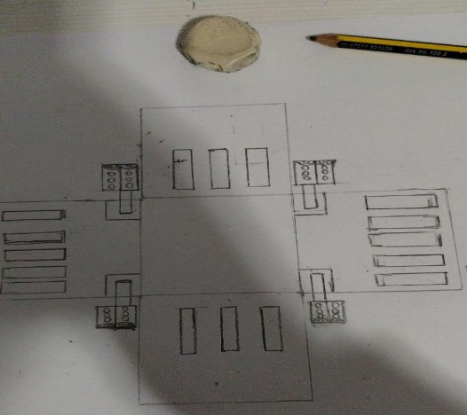
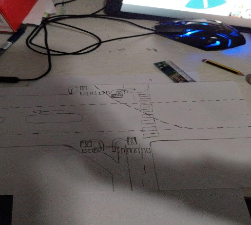
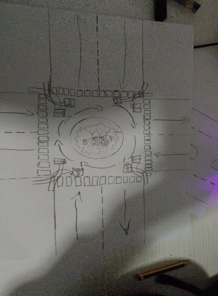
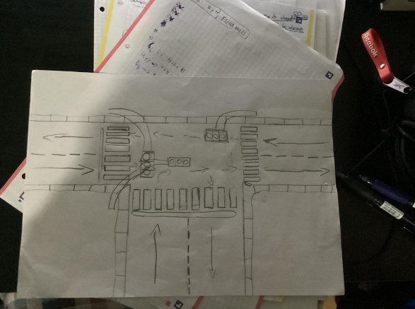
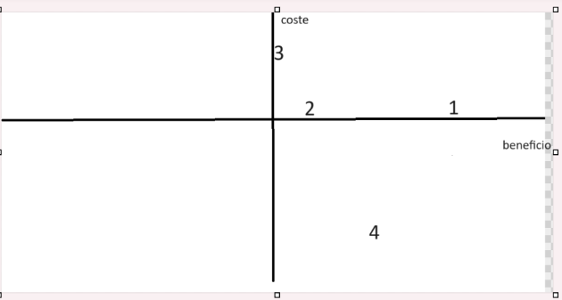

LLUVIA DE IDEAS
1-
Este modelo está pensado para que mientras que un semáforo esté en rojo el otro esté en verde, el de los coches está en rojo pues el de peatones estará en verde. Y te preguntarás si todos los semáforos de los coches se ponen en verde, no todos solo uno de un lado y otro de otro para que no se choquen y mientras los otros están en rojo los peatones pasan por los que están en verde
2.
Está modelo nos indica que hay 4 semáforos, hay 2 carreteras principales cada uno con sus 2 carriles de ida y vuelta y a cada lado de cada carretera principal hay 2 semáforos con pasos de cebra y es muy simple si el semáforo está en rojo en la carretera principal en la otra calle se pone verde y en la otra se cambia de color cada 1 o 2 minutos depende de si hay alguna persona o coche esperando.
3.
Este modelo enseña que hay una rotonda y 8 semáforos y cada 1 minuto se ponen en verde una parte vertical y lateral y la otra en rojo
4.
En esta foto podemos ver que hay tres calles las tres son de ida y vuelta en la principal la más grande en la del medio hay un semáforo qué esta izquierda pero que está por el medio esta vertical este semáforo está en verde cuando el de la izquierda está en rojo y el de la derecha está en verde cuando el del medio está en rojo y por último el de la izquierda está en verde cuando el del medio está en rojo
